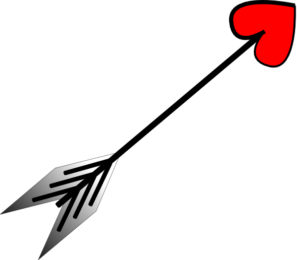

Do traditional couples and nontraditional couples meet in the same way?
What kinds of couples are more likely to have met online?
Does meeting online lead to greater or less couple stability?
scroll down to know more...
How do they meet?
met through coworker
met through family
met through friend
met through neighbor
offline other ways
Internet chat
Internet game
Internet dating App
social networking
Internet otherways
Online vs Offline?
met online
met offline
Relationship Duration
These are the major ways that couples meet one another (Based on the respondant's perspective). Offline other ways include: in bar/restaurant; on a blind date; in church...
Dating apps have been a major way that people meet each other ever since its emergence in 2000.
"It used to be that finding a partner is something one did with their community,” says Thomas. “Now it is basically an individual quest."
The second row is about couples who only met through Internet and have never seen each other in person before.
"Internet" by itself is unspecified internet. The definition is according to the respondant.
scroll down to know more
This is about the amount of people met online/not online when the survey was carried out in 2010.
“People used to make up stories about how they met, so they wouldn’t have to admit that they met online, but now many people embrace it,” says Thomas.
Research suggests that online dating has led to more interracial marriages, more couples with different religions and levels of education.
The happiest couples, it seems, are those who met through church. These partners report the highest overall relationship satisfaction.
Click the circle to see more details.
scroll down to know more
These represents the duration of the relationships and how they meet.
Most pink dots (who met through the Internet), tend to squeeze in the left part of the graph. Since the Internet became popular in the 21st century.
Nearly 30% of new couples now meet online. Today the Internet is the second-most common way to meet a partner, according to results from the NEW How Couples Meet and Stay Together Survey (2017), with web introductions ranked only behind introduction by mutual friends.
That new survey, How Couples Meet and Stay Together 2017, features new questions about subjects' use of phone apps like Tinder and Grindr for dating and meeting partners.